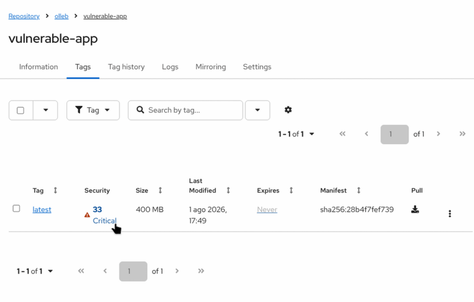
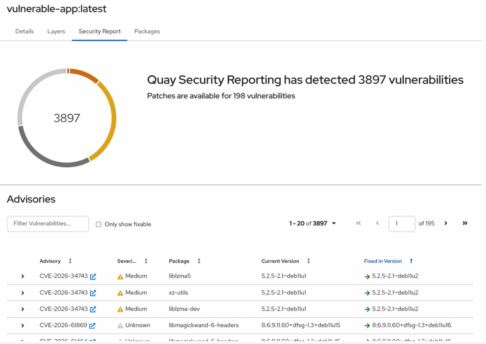
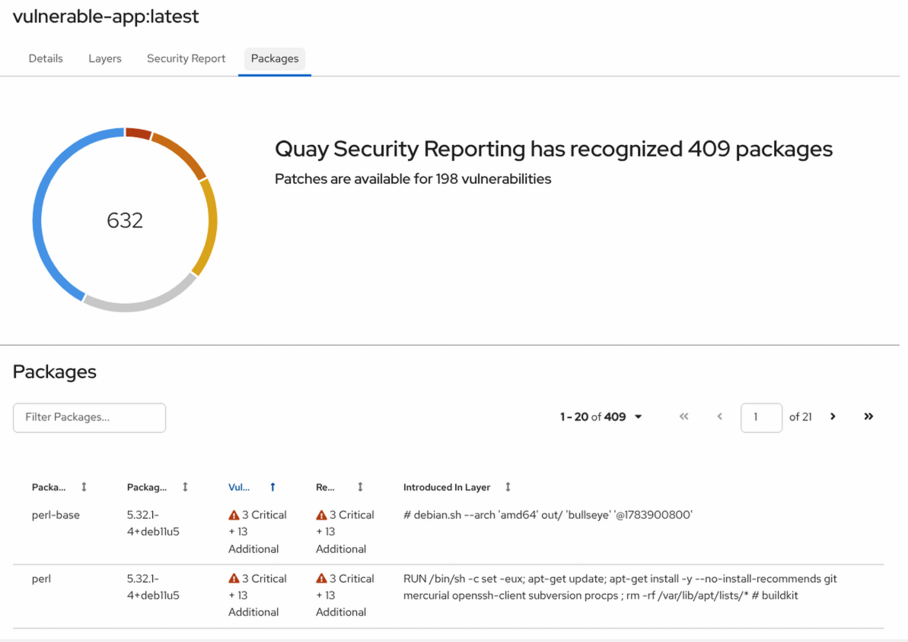

Security Scanning
Red Hat Quay integrates seamlessly with Clair, an open-source static vulnerability scanner. Clair inspects your container images layer-by-layer, identifying known CVEs (Common Vulnerabilities and Exposures) in the underlying operating system and application packages.
Exploring Vulnerability Data (CVEs)
Performing a Security Scan
To see Clair in action, we will push an older, intentionally vulnerable image into our repository.
-
Pull a legacy Node image and push it to your Quay registry:
podman pull docker.io/library/node:26.5.1-bullseye podman tag docker.io/library/node:26.5.1-bullseye ${QUAY_HOSTNAME}/olleb/vulnerable-app:latest podman push ${QUAY_HOSTNAME}/olleb/vulnerable-app:latest -
Navigate to the Red Hat Quay Dashboard and open the
olleb/vulnerable-apprepository.

-
Go to the Tags tab.
Note: You might briefly see the Security column displaying "Queued" or "Scanning…". Clair scans images asynchronously in the background. Wait a few moments and refresh the page.
-
Once the scan is complete, the Security column will display a text indicating the highest severity found (e.g., Critical or High). Click on this text to open the Security Scan dashboard.

The Security Scan dashboard provides detailed, actionable information about detected vulnerabilities:
-
Advisory: A direct link to the CVE (Common Vulnerabilities and Exposures) database or Red Hat Security Advisory database for in-depth reading.
-
Severity: The level of risk associated with the vulnerability (Critical, High, Medium, Low).
-
Package: The name of the affected software package installed in the container.
-
Current Version: The vulnerable version of the package currently in the image.
-
Fixed In Version: The package version where the maintainers have resolved the vulnerability. (This is the most important column for remediation!)
Clicking on any specific CVE will reveal a detailed description of the exploit and its potential impact.
Viewing Packages
Understanding your vulnerabilities is only half the battle; knowing your entire software inventory is equally important.
-
While inside the tag details view, switch to the Packages tab (located next to the Security Scan tab).

The Packages dashboard acts as an internal inventory of your container, displaying every detected library and package, even the safe ones:
-
Package Name: Name of the installed OS or language-level package.
-
Package Version: Current version of the package in the image.
-
Vulnerabilities: Number of known vulnerabilities affecting this specific package.
-
Remaining After Upgrade: Vulnerabilities that would still exist even if you upgrade this package to the latest available version.
-
Introduced In Layer: The image layer where the package was added.
|
DevSecOps in Practice: The combination of Clair’s Security Scan and the SBOMs we attached in previous exercises provides a complete, 360-degree view of your software supply chain security. You not only know what’s inside your container, but exactly which components need immediate patching before deploying to production. |
|
DevSecOps Automation: Vulnerability Alerts
Remember the repository notifications we configured in the previous exercises? You can apply that exact same automation to security scanning! By navigating to the repository Settings > Events and notifications, you can create an alert triggered by the Vulnerability Detected event. This allows you to automatically notify your security team via Slack, or trigger a webhook to halt a deployment pipeline the moment Clair detects a new Critical or High vulnerability in your images. |